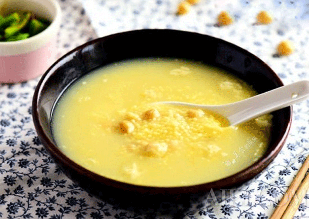

<ion-view view-title="健康课堂详情" id="health-class-details">
    <!-- 视频-->
    <ion-nav-bar class="bar-energized">
        <ion-nav-buttons side="left">
            <button class="button button-clear ion-chevron-left pull-left" ui-sref="account"></button>
        </ion-nav-buttons>
        <ion-nav-buttons side="right">
            <span class="button button-clear" ui-sref="account"> </span>
            <span class="button button-clear ion-android-open" ui-sref="account"></span>
        </ion-nav-buttons>
    </ion-nav-bar>
    <ion-content>
        <div class="img-one">
            
            

        </div>
        <div class="list">
            <div class="title">如何有效预防缓解春困?鹰嘴豆小米粥轻松搞定</div>
            <div class="date-browse">
                <span class="date">发布时间&nbsp;：2015-06-25</span>
                <span class="browse">浏览&nbsp;：56</span>
            </div>
            <div class="content">
                春天到了，春光明媚，春风和讯，同时也让很多人春眠不觉晓”整天哈欠连连，头昏欲睡，胃口不佳，饱受春困的困扰。合理的饮食对预防和缓解
                春困有很大的帮助。饮食要清淡，不补水，补充维生素B1，优质蛋白质。鹰嘴豆小米粥，色泽金黄的米汤，醇正的米香不仅能够开胃，还能预防缓解春困。
            </div>
            <div class="img-two"></div>
            <div class="content">
                水占人体重量的70%，人体的各个器官，肌肉中的水的含量都占很大的比列。说明谁对人体很重要
            </div>
        </div>

    </ion-content>
</ion-view>